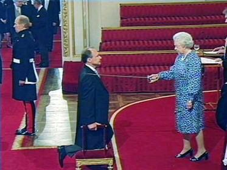

Sir Tim Berners-Lee

You affect the world by what you browse. Anyone who has lost track of time when using a computer knows the propensity to dream, the urge to make dreams come true and the tendency to miss lunch. The Web as I envisaged it, we have not seen it yet. The future is still so much bigger than the past.
Timeline:
- 1955: Born on the 8th of June in London, United Kingdom
- 1973: Began attending the Queen's College, Oxford
- 1976: Obtained a first-class bachelor of arts degree in physics
- 1980: Found occasional work as an independent contractor at CERN, the European Organization of Nuclear Research, where he pitched a project that made use of the concept of hypertext, text displayed on computers that can be read instantaneously through the usage of hyperlinks, allowing for easier distribution of information. He created a prototype system by the name of
ENQUIRE
to show off the possibilities of applications for this system
- 1980: Became employed at John Poole's Image Computer Systems, where he led the technical side of the company for three years.
- 1984: Returned to CERN, this time as a fellow, with his new experience in computer networking
- 1989: CERN officially became the continent's largest internet node, inspiring Tim Berners-Lee to look for a way to bring hypertext onto the internet. This led to his proposal for the creation of the internet
- 1990: Redistributed his proposal, which was accepted by his manager, who was intrigued by his idea. The world wide web was then created, along with the first web browser, called
WorldWideWeb,
which used the world's first web server, CERN HTTPd

- 1990: Married Nancy Carlson
- 1994: Founded the W3C, which gathered many companies to set standards and recommendations for the world wide web, to improve its quality for its users

- 2004: Became a chair in computer science at the School of Technology and Computer Science at the University of Southampton, to develop the Semantic Web, an extension to the world wide web which was made to allow machines to read data from the internet.
- 2004: Was knighted for his astounding accomplishments

- 2011: divorced Nancy Carlson
- 2014: Married Rosemary Leith
- 2020: He is currently 65 years old
By Cameron Carter